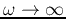
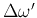
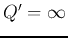
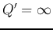
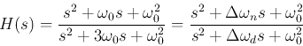

Next: Wien bridge
Up: wien
Previous: wien
The twin-T network is composed of two T-networks:
- The CRC network is formed by two capacitors
 and one
resistor . This T (or Y) network can be converted to a
(or
and one
resistor . This T (or Y) network can be converted to a
(or  ) network:
) network:
- The RCR network is formed by two resistors
 and one
capacitor . This T (or Y) network can be converted to a
(or ) network:
and one
capacitor . This T (or Y) network can be converted to a
(or ) network:
The two parallel -networks can be combined to become one
-network with three branches
 ,
,
and
,
,
and
 :
:
The transfer function of this -network (a voltage divider) is:
We define
and express the second order denominator in the canonical form as
where  is the quality factor, and
is the bandwidth of the filter.
We let and get the frequency response function:
is the quality factor, and
is the bandwidth of the filter.
We let and get the frequency response function:
- When
 ,
,
- When
,
- When
,
When
, , the output is zero, i.e.,
this twin-T network is a band-stop filter (notch filter) which attenuates
frequncy to zero.
The bandwidth
is likely to be too large
for certain applications due to the small quality factor . To overcome
this problem, an active filter circuit containing two opamp followers (with
unity gain  can be used to intruce a positive feedback loop as shown below:
can be used to intruce a positive feedback loop as shown below:
Now the common terminal of the twin-T filter is no longer grounded, instead
it is connected a potentiameter, to the voltage dividor composed of  and
and
 , to form a feedback loop by which a fraction of the output
, to form a feedback loop by which a fraction of the output  is
fed back:
is
fed back:
The input and output of the twin-T network are now related by
Substituting
and rearranging, we get
The transfer function of this active filter with feedback can be found to be
Substituting
and
, we
get
where and  are respectively the quality factor and the bandwidth of the
active filter with feedback:
Now by varying and , the quality factor and bandwidth can
be adjusted. In particular,
- when ,
 (no feedback), ,
;
(no feedback), ,
;
- when
 , (one hundred percent feedback), ,
, (one hundred percent feedback), ,
 .
.
If in the CRC T-network the vertical capacitor branch is dropped, i.e.,
, while the RCR T-network is still the same, we get a bridged T
network. Now , and we have
The transfer function of this bridged T network (a voltage divider) is:
We let , and express the second order denominator in the
canonical form as

where
are the bandwidth of the 2nd-order systems of the numerator and the
denominator, respectively.
We let and get the frequency response function:
We see that this is a band-stop filter.
Next: Wien bridge
Up: wien
Previous: wien
Ruye Wang
2015-11-29